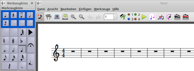

NtEd
Dieser Artikel wurde für die folgenden Ubuntu-Versionen getestet:
Ubuntu 16.04 Xenial Xerus
Ubuntu 14.04 Trusty Tahr
Zum Verständnis dieses Artikels sind folgende Seiten hilfreich:
- Installation
- Benutzung
- Programmgrundlagen
- Noten/Partitur erstellen
- Notenblatt und Partitur einrichten
- Noten eingeben und löschen
- Noten verschieben
- Haltebögen/Bindebögen
- Modifizierte Taktstriche/Änderung der ...
- Schlüsseländerung/Vorzeichenänderung
- Stimmeneinrichtung
- Auftakte
- Dynamik/Tempo/Tempoänderungen/Text
- Sonderzeichen
- Blockbefehle
- Überbalkungen und Notenhälse
- Taktabstände horizontal verändern
- N-Tolen
- Transponieren
- Enharmonische Verwechslung
- Partiturauszug
- Speichern/Exportieren
- Abspielen
- Problembehebung
- Konfigurationsdatei
- Links
NtEd  ist nach Meinung seines Autors Jörg Anders
ist nach Meinung seines Autors Jörg Anders  der erste WYSIWYG Partitur-Editor für Linux. NtEd ist inzwischen Bestandteil vieler Linux-Distributionen.
der erste WYSIWYG Partitur-Editor für Linux. NtEd ist inzwischen Bestandteil vieler Linux-Distributionen.
Man kann mit NtEd per Mausklick Noten oder ganze Musikstücke eingeben, verschiedene Musikinstrumente - auch mehrstimmig - wählen, sofort hören und als Partituren über PDF ausdrucken. NtEd wurde bis Anfang 2011 aktiv entwickelt, z.Z. ist es leider unbetreut, weil der Autor keine Zeit mehr dazu hat. Theoretisch ist ein "What you see is what you get", bzw. "What you see on screen is exactly what you get on printer output" und "What you see you can hear at once" Editor, in der Praxis kann es leider mit den in den Ubuntu-Quellen vorliegenden Versionen nur teilweise genutzt werden (siehe Problemlösungen und Manuelle Installation).
Mit NtEd ist es möglich, komplette Notensätze mit Maus oder Tastatur zu schreiben, bzw. über ein MIDI-Gerät einzulesen, einstimmig, mehrstimmig, Triolen, Akkord-Symbole und Gitarrengriff-Diagramme, verschiedene Instrumente gleichzeitig, Transponieren von Noten(mengen), Liedtexte hinzuzufügen und vieles mehr. Die MIDI-Ausgabe ermöglicht z.B. mit Hilfe von Audacity und Brasero Musik-CDs zu erstellen. Die fertigen Partituren können z.B. als PDF-Datei ausgedruckt oder in ein Textdokument eingefügt werden. Ein umfassendes Handbuch zu NtEd gibt es in englischer und deutscher Sprache.
Folgende Importformate werden unterstützt: MusicXML, MIDI
Folgende Exportformate werden unterstützt: PS, PDF, PNG, SVG, MIDI, LilyPond
Die vollständige Funktionsübersicht ist auf der Projektseite unter dem Punkt "Properties" zu finden.
Leider ist die Betreuung und Entwicklung von NtEd inzwischen vollständig eingestellt
Hinweis:
Die Projektseite ist derzeit (November 2017) nicht erreichbar, damit ist auch das Online-Handbuch nicht greifbar! Die Hilfe kann derzeit unter 16.04 - Installation von nted-doc vorausgesetzt - nur über den Aufruf von file:///usr/share/doc/nted/de/index.html in einem Browser aufgerufen werden, da auch die Hilfefunktion im Programm selbst nicht funktioniert. Der Sourcecode ist von der Projektseite ebenfalls nicht mehr beziehbar.
Installation¶
| NtEd |
Folgende Pakete müssen installiert[1] werden:
nted
nted-doc (das Handbuch)
timidity (für die Audio-Ausgabe, siehe TiMidity, optional)
 mit apturl
mit apturl
Paketliste zum Kopieren:
sudo apt-get install nted nted-doc timidity
sudo aptitude install nted nted-doc timidity
Nach der Installation ist das Programm je nach Desktopoberfläche unter dem Menüpunkt "Multimedia" bzw. "Unterhaltungsmedien" erreichbar[4].
Fremdpaket¶
Wenn auf der NtEd Homepage ein neueres Debian-Paket[2] vorgestellt wird als das in den aktuellen Ubuntu-Quellen vorhandene, erst mal dort unter den Punkten "New in..." nachsehen, was die Bugfixes, Verbesserungen und Neuerungen sind. Dann findet man unter "Debian Packages" die entsprechenden Downloadseiten. Vorher natürlich das alte NtEd-Programm deinstallieren.
Hinweis!
Fremdpakete können das System gefährden.
Aus dem Quellcode¶
Erfahrene Linux-User können sich die jeweils neueste Version von NtEd aus dem Quellcode selbst kompilieren[3]. Diesen findet man auf der Projektseite , unter dem Punkt "Download source". Auch hier gilt:
Hinweis!
Fremdsoftware kann das System gefährden.
Benutzung¶

Programmgrundlagen¶
Nach dem Starten[4] von NtEd erscheint unter der Menüleiste die Symbolleiste mit den wichtigsten Arbeitssymbolen, im Hauptteil des Programmfensters eine leere Partitur sowie als separates Fenster die Werkzeugkiste.
Die 3 Arbeitsmodi¶
NtEd verfügt über drei Arbeitsmodi:
| Die drei Arbeitsmodi | |||
| Modus | Symbol | Tastenkürzel | Erklärung |
| Einfügemodus (Starteinstellung) | Modus ein-/ausschalten: N | Dient zum Eingeben von Noten und Pausen | |
| Editiermodus | Beide anderen Modi ausgeschaltet. | Zum Manipulieren der Partitur. | |
| Seitenmodus | Modus ein-/ausschalten: P | Dient zum Bewegen der Partitur mithilfe der Maus. | |
Werkzeugkiste¶
Die Werkzeugkiste ist standardmäßig als frei schwebendes Fenster sichtbar. Falls sie einmal versehentlich geschlossen sein sollte, kann sie über das Symbol wieder sichtbar gemacht werden. Die Werkzeugkiste verfügt über fünf Unterabteilungen. Diese sind über die blau hinterlegten Schalter im oberen Bereich oder über die Pfeiltasten bzw. zugänglich.
| Die Werkzeugkiste | |||
| Schalter | Erklärung | ||
| Stellt die grundlegenden Noten, Vorzeichen und Symbole zur Verfügung. | |||
| Erweiterte Noten, Vorschläge, Vorzeichen und Artikulationen. | |||
| Verzierungen und Ausführungsanweisungen. | |||
| Besondere Notenköpfe (z.B Schlagzeugnoten) | |||
| Tremolobalken | |||
Tipps: Für den Fall, daß auf der Computertastatur ein Ziffernblock vorhanden ist, kann die Werkzeugkiste auch mit diesem bedient werden. Die Anordnung der Symbole entspricht der Anordnung des Ziffernblocks. Die ⇩ num -Taste muss hierzu deaktiviert sein.
Für einige der in der Werkzeugkiste angebotenen Noten-, Ausführungs- und Symbolzeichen stehen zusätzlich einige Tastenkürzel zur Verfügung.
Noten/Partitur erstellen¶
Notenblatt und Partitur einrichten¶
Der erste Bearbeitungsschritt ist das Einrichten des Notenblatts entsprechend den von der zu erstellenden Partitur abhängenden Gegebenheiten.
| Partitureigenschaften | ||
| Einstellung | Erreichbarkeit | Erklärung |
| Partiturformat | "Datei -> Papier konfigurieren" | Festlegung des Notenblattformats (z.B. A4, A5, Querformat, Hochformat usw.) |
| Notenlinienabstände | "Datei -> Partitur skalieren" | Einrichtung der Maße/Höhe der Notenzeilen. |
| Takte hinzufügen | "Einfügen -> Block einfügen" | Weitere Takte hinzufügen. |
| Stimmeneinrichtung | "Einfügen -> Eine Notenzeile anfügen" | Erhöhung der Stimmenanzahl/Hinzufügen von Einzelstimmen zur Partitur (alternativ Strg + A ). |
| Neue Zeile erzeugen | "Einfügen -> Ein System anfügen" | Hinzufügen einer neuen Zeile bzw. eines neuen Systems (alternativ Strg + B ). |
| Entfernen einer Stimme bzw. einer Notenzeile |  auf Notenzeile auf Notenzeile | Einstellungsfenster "Zeileneigenschaften"; dort Schaltfläche "Delete Staff" bzw. "Delete System" |
| Tonart, Taktart, Zeilenname, Gruppenname festlegen | auf Notenzeile | Einstellungsfenster "Zeileneigenschaften" |
| Systemklammern, durchgezogene Taktstriche | "Bearbeiten -> Systemlayout" | Die per Systemklammern zusammenzufassenden Stimmen müssen zuvor per  -Maustaste als Block markiert werden, wie im Abschnitt "Blockbefehle" beschrieben. Ein Aufheben einer Zusammenfassung erfolgt durch Anklicken von "Gruppe löschen". -Maustaste als Block markiert werden, wie im Abschnitt "Blockbefehle" beschrieben. Ein Aufheben einer Zusammenfassung erfolgt durch Anklicken von "Gruppe löschen". |
Noten eingeben und löschen¶
Noten werden im Einfügemodus mithilfe des Werkzeugkiste und der Maus eingefügt.
1. Notenlänge zusammen mit allen Zusatzangaben wie Punktierungen, Vortragsbezeichnungen, Vorzeichen, Schlagzeugköpfen u.ä. im ersten Unterbereich der Werkzeugkiste auswählen. Tipp: Die Notenlänge kann auch per Tastenkürzel über die Tastatur festgelegt werden:
| Tastenkürzel für die Notenlängen | ||
| Symbol | Tastenkürzel | Erklärung |
| 1 | Notenwert auf ganze Note setzen. | |
| 2 | Notenwert auf halbe Note setzen. | |
| 4 | Notenwert auf Viertelnote setzen. | |
| 5 | Notenwert auf Achtelnote setzen. | |
| 6 | Notenwert auf Sechzehntelnote setzen. | |
| 7 | Notenwert auf Zweiunddreißigstelnote setzen. | |
| 8 | Notenwert auf Vierundsechzigstelnote setzen. | |
2. Ein anschließendes Überfahren der Notenzeile mit der Maus bewirkt ein Andeuten der Note in blauer Farbe. Diese wird dann durch
-Klick auf das Notenblatt erzeugt. Die zuvor angezeigten Pausen werden so nach und nach durch die erzeugten Noten ersetzt.3. Ein nochmaliges Anklicken derselben Note löscht diese wieder. Tipp: Ein Entfernen von Noten ist auch im Editiermodus durch Markieren der Note mit der
-Taste (markierter Notenkopf wird rot eingefärbt) und anschließendes Betätigen der
Entf -Taste möglich.Mehrklänge/Akkorde können durch Einfügen weiterer Notenköpfe ober- oder unterhalb einer bereits bestehenden Note generiert werden.
Noten verschieben¶
Im Editiermodus können Noten per -Mausklick markiert (werden dann rot dargestellt) und innerhalb eines Taktes nach rechts oder links bzw. transponierend nach oben oder unten verschoben werden.
Haltebögen/Bindebögen¶
Haltebögen:
Wahl des Editiermodus
Schaltfläche im Werkzeugkasten anklicken.
beide Noten nacheinander per
-Maustaste anklicken.Nach Abschluss der Aktion nicht vergessen, die Haltebogen-Schaltfläche im Werkzeugkasten wieder zu lösen, da sie sonst andere Aktionen blockiert.
Alternativ (Methode 2): Tastenkürzel , verwenden.
Bindebögen:
Einfügemodus wählen.
Die gewünschten Noten per Blockauswahl mittels
-Maustaste markieren.Anschließend Menü "Einfügen -> Bindebogen" oder alternativ Strg + H . Der Bindebogen kann per blau markierter Anfasser in seiner Form manipuliert werden.
Löschen eines Bindebogens erfolgt durch Markieren des Bogens per -Maustaste und anschließende Betätigung der
⌫ -Taste.
Modifizierte Taktstriche/Änderung der Taktart¶
Für Taktstrichmodifikationen wie Wiederholungszeichen, Doppelstriche und Schlussstriche ist im Editiermodus der gewünschte Taktstrich per -Maustaste anzuklicken und im darauffolgenden Auswahlfeld mittels der Pfeiltasten die gewünschte Taktstrichform auszuwählen. Eine auf den Taktstrich folgende Änderung der Taktart kann ebenfalls in diesem Dialogfeld realisiert werden.
Schlüsseländerung/Vorzeichenänderung¶
Eine Änderung des Schlüssels erfolgt im Einfügemodus über Menü "Einfügen -> Schlüssel".
Eine Vorzeichenänderung findet, ebenfalls im Einfügemodus, über das Menü "Einfügen -> Vorzeichnung einfügen" statt.
Geänderte Schlüssel oder Vorzeichen können im Editiermodus durch Markieren des Elemnts per -Maustaste und anschließende Betätigung der
⌫ -Taste wieder gelöscht werden.
Stimmeneinrichtung¶
Der in der Werkzeugleiste gelegene Stimmenauswähler dient dem Einrichten von bis zu vier Einzelstimmen innerhalb einer Notenzeile. Hierzu muss vor der Eingabe der entsprechenden Stimme diese in einem der vier Farbfelder 1-4 vorgewählt werden. Zur besseren optischen Unterscheidung der Stimmen während der Noteneingabe kann zusätzlich der Farbknopf angewählt werden.
Auftakte¶
Zuvor wird im Editiermodus die Note markiert, die den Beginn des ersten Volltakts darstellen soll. Anschließend im Menü "Bearbeiten -> Auftakt" die Schaltfläche "Angabe des 1. vollen Taktes" auswählen.
Dynamik/Tempo/Tempoänderungen/Text¶
Konkrete Dynamikangaben werden im Einfügemodus nach Auswahl der entsprechenden Angabe im Menü "Einfügen -> Lautstärkezeichen" per -Maustaste an der gewünschten Partiturstelle eingefügt. Ein Verschieben bzw. Löschen der Dynamikangabe ist dann im Editiermodus mithilfe der Maus bzw. der
⌫ -Taste möglich.
Dynamikänderungen (Crescendo-/Decrescendogabeln; und über dieses Menü auch weitere Liniensymbole) werden über "Einfügen -> Linien" der Partitur hinzugefügt. Für weitere Modifikationen dieser Liniensymbole im Editiermodus ist es allerdings wichtig zu wissen, dass das entsprechende Liniensymbol nur bei -Klick auf den Anfang der Linie/Gabel markiert werden kann. Anschließend ist ein Verschieben bzw. Löschen mittels der oben beschriebenen Methoden möglich.
Tempozeichen werden über "Einfügen -> Tempozeichen", Texte über "Einfügen -> Text", Tempoänderungen über "Einfügen -> Ritardando" bzw. "Accelerando" hinzugefügt und können analog zu den oben beschriebenen Verfahrensweisen modifiziert werden.
Strophentexte können mithilfe des Menüs "Einfügen -> Strophen" auch direkt in die Partitur geschrieben werden.
Mit dem erscheinenden Stiftsymbol wird der Notenkopf, bei dem der Text beginnen soll, durch Anklicken markiert.
Anschließend kann mit dem Schreiben sofort begonnen werden.
Der Wechsel zur jeweils nächsten Note erfolgt über die -Taste.
Hinweis: Es ist wichtig, den Strophen-Eingabemodus am Ende der Texteingabe mittels Esc -Taste wieder zu verlassen (Stiftsymbol verschwindet), damit wieder auf andere Funktionalitäten zugegriffen werden kann.
Sonderzeichen¶
Weitere Sonderzeichen wie Da Capo, Dal Segno, Atemzeichen etc. hält im Einfügemodus das Menü "Einfügen -> Zeichen einfügen" bereit.
Blockbefehle¶
Durch Blockbefehle können ganze Notenblöcke, auch über mehrere Notenzeilen eines Systems hinweg, gelöscht, kopiert, eingefügt und verschoben werden.
Im Editiermodus wird der Notenblock mittels der
-Maustaste derart diagonal überfahren, daß das entstandene violette Rechteck alle gewünschten Elemente umfasst (diese werden dann ebenfalls in violetter Farbe angezeigt). Einzelstimmen innerhalb eines mehrstimmigen Systems, die von der folgenden Aktion ausgeschlossen werden sollen, können an dieser Stelle noch per
-Maustaste abgewählt werden.Für die weiteren Aktionen stehen im Menü "Bearbeiten" nun Befehle wie "Kopieren", "Einfügen", "Block leeren" und "Block löschen" zu Verfügung.
Überbalkungen und Notenhälse¶
NtEd kümmert sich um eine automatische Überbalkung kleiner Notenwerte je nach Notenlänge und Taktart.
Sofern eine davon abweichende Überbalkungsweise gewünscht wird, kann die entsprechende Note im Editiermodus nach Markieren mit der
-Maustaste mittels der Isolier-Schaltfläche von den anderen Noten getrennt werden. Ein Zusammenführen von Überbalkungen geschieht über vorheriges Markieren des gesamten Notenblocks mittels
-Maustaste wie bei den Blockbefehlen beschrieben und anschließendes Anklicken der nun verändert dargestellten Schaltfläche .
Die Änderung der Notenhalsrichtung erfolgt im Editiermodus bei zuvor markierten Noten über die Schaltfläche (alternativ Strg + F ). Die Länge der Notenhälse sowie die Neigung der Überbalkung lässt sich über den bei der markierten Note erscheinenden kleinen blauen Anfasser modifizieren.
Taktabstände horizontal verändern¶
Global für die ganze Partitur lassen sich die optischen horizontalen Maße der Takte über Menü "Bearbeiten -> Abstände ändern" mithilfe eines Schiebereglers einstellen.
Für die individuelle Anpassung der horizontalen Maße eines Einzeltaktes ist im Editiermodus ein einzelner Notenkopf des gewünschten Taktes zu markieren. Anschließend muss bei gedrückter ⇧ -Taste das Mausrad betätigt werden, bis die gewünschte Taktgröße erreicht ist.
N-Tolen¶
Es können N-Tolen von 2 bis 13 erzeugt werden. Hierzu wird im Editiermodus die erste Note (z.B. eine Viertelnote) oder Pause ausgewählt, die Bestandteil der N-Tole werden soll.
Anschließendes Anklicken von Strg + 3 ergibt z.B. eine Triole, wobei jede einzelne Triolennote den Wert der ersten Note (eben auch den einer Viertelnote) zugewiesen bekommt. Es erscheinen folglich zwei weitere Viertel-Triolenpausen (als vorläufige noch zu füllende Platzhalter).
Wird stattdessen die Tastenkombination Alt + Strg + 3 verwendet, so interpretiert NtEd diese Anweisung so, dass die gesamte Triole sich über den Wert der Urprungsnote (in diesem Fall eine Viertel) erstrecken soll. Es wird also lediglich eine weitere Triolenachtel(-pause; als Platzhalter) hinzugefügt.
Größere N-Tolenwerte als 9 werden über Menü "Einfügen -> N-Tole einfügen" generiert. Das Löschen von N-Tolen erfolgt über "Bearbeiten -> N-Tole löschen"
Transponieren¶
Zum Transponieren einer Stelle wird diese im Editiermodus wie in den Blockbefehlen beschrieben per Maus als ganzer Block markiert und kann dann über "Werkzeuge -> Transponieren" bearbeitet werden. Wichtig: die Tonart wird auf diese Weise nicht mit geändert; sollte dies gewünscht sein, muss wie im entsprechden Abschnitt geschildert manuell eine Tonartänderung vorgenommen werden.
Enharmonische Verwechslung¶
Enharmonische Verwechslung kann im Editiermodus über Menü "Werkzeuge -> Setze Kreuze" bzw. "Setze Bs" vorgenommen werden.
Soll eine ganze Notenzeile enharmonisch verwechselt werden, ist eine Note innerhalb dieser Notenzeile anzuklicken (erscheint rot markiert) und anschließend die Menüfunktion zu nutzen.
Falls nur eine definierte Auswahl von Noten verwechselt werden soll, ist diese per Maus als Block zu markieren (erscheint blau markiert; siehe Blockfunktionen) und kann nunmehr mittels der Menüfunktion manipuliert werden.
Partiturauszug¶
Partiturauszüge, z.B. zur Erstellung von Einzelstimmen aus der Partitur, können über das Menü "Datei -> Partiturauszug" extrahiert werden.
Speichern/Exportieren¶
Über Menü "Datei -> Speichern" bzw. "Speichern unter..." können die erstellten Partituren im programmeigenen Dateiformat .ntd abgespeichert werden. Als Exportformate stehen im "Datei"-Menü die Formate PS, PDF, PNG, SVG, MIDI und LilyPond zur Verfügung.
Abspielen¶
Abspielen lassen sich die bisher eingegebenen Noten durch auf das grüne Dreieck auf der zweiten Menüleiste. Nochmaliger Mausklick auf das Dreieck stoppt das Spiel, eine Pausenfunktion ist leider nicht vorgesehen..
Als Standard ist als Instrument "Piano 1" vorgegeben. Das lässt sich leicht ändern:
links neben die Notenzeile -> "Staff context" -> "MIDI" und gewünschtes Instrument auswählen, z.B. "Cembalo", "Jazzgitarre", "Geige", "Schlagzeug", "Gewehrschuss", und vieles mehr.Möchte man mit NtEd erstellte Partituren in ein Textdokument einfügen, exportiert man als PNG und fügt das (eventuell bearbeitete) Bild in das Textdokument ein. Das ist für OpenOffice.org oder LaTeX in der Dokumentation
genau beschrieben.
Einige Details¶
Hilfe bekommt man in NtEd nach Anklicken des Menüpunktes "Hilfe". Es öffnet sich das sehr ausführliche Handbuch mit genauen Bedienungsanleitungen. Wer ein Handbuch in einer anderen als der installierten Sprache lesen möchte: in /usr/share/doc/nted/ die entsprechenden Ordner de (Deutsch), en (Englisch), es (Spanisch) oder it (Italienisch) öffnen, und index.html aufrufen. Wer das Handbuch schon vor der Installation lesen möchte, kann den unten stehenden Link "Online-Dokumentation" nutzen.
Es empfiehlt sich, als Einführung zu den Möglichkeiten von NtEd einige der 11 Musikbeispiele zu hören. Man findet sie in /usr/share/doc/nted/: sie liegen dort komprimiert als example1.ntd.gz bis example11.ntd.gz vor und können von dort z.B. ins Homeverzeichnis kopiert, entpackt[5] und mit NtEd geladen werden.
Wer keine MIDI-Karte hat, die mit NtEd zusammenarbeitet, geht nach Installation des oben genannten Paketes timidity wie in der Dokumentation
beschrieben vor. Dazu Folgendes beachten:Vor Starten von NtEd Anwendungen schließen, die PulseAudio verwenden, TiMidity wie angegeben
starten. Dazu den Befehl timidity -iA -B2,8 -Os1l -s 44100
in einem Terminal[6] ausführen. Mit Strg + C schließt man den Prozess. Bequemerweise richtet man einmal einen Starter[7] ein und übergibt ihm als Kommando die obige Befehlszeile. Danach NtEd aufrufen und unter "Bearbeiten > Einstellungen > MIDI Ausgang konfigurieren..." den Timidity-Port auswählen, mit dem man in der Lage ist, die Noten direkt aus NtEd heraus abzuspielen, z.B. "4" und "port 128:0 Timidity". Falls NtEd später wieder mal stumm bleibt, wenn zwischendurch eine Anwendung PulseAudio verwendet hat, muss der Port neu eingestellt werden (siehe auch unter Problemlösungen).
Eine detaillierte Anleitung zu NtEd und Tonausgabe gibt es im Handbuch
Problembehebung¶
Druck, PDF-/PS-Ausgabe und Zoom funktionieren nicht¶
Abhilfe schafft es, sich das Programm aus dem aktuellen Quellcode  selbst zu erstellen[3]. Allerdings muss dann zur Benutzung ohne midi-fähige Soundkarte TiMidity separat gestartet werden (siehe auch Anleitung oben, die nted.desktop-Datei befindet sich dann unter /usr/local/share/applications). Weiterer Vorteil der selbstkompilierten Version: Auch das Zoomen der Ansicht funktioniert damit wieder, ebenso lassen sich die Notenschlüssel wieder direkt den Stimmen zuordnen.
selbst zu erstellen[3]. Allerdings muss dann zur Benutzung ohne midi-fähige Soundkarte TiMidity separat gestartet werden (siehe auch Anleitung oben, die nted.desktop-Datei befindet sich dann unter /usr/local/share/applications). Weiterer Vorteil der selbstkompilierten Version: Auch das Zoomen der Ansicht funktioniert damit wieder, ebenso lassen sich die Notenschlüssel wieder direkt den Stimmen zuordnen.
Umlaute in Strophen¶
NtEd kann im "Strophenmodus" ("Einfügen -> Strophen -> Strophe x" nicht immer mit Umlauten und Sonderzeichen umgehen; es erscheinen ggf. nach Eingabe eines solchen Buchstabens kryptische Zeichenkombinationen. Diese sollte man vollständig entfernen, insbesondere dabei eventuell entstehende "Zeilenumbrüche" (Zeichen unterhalb der eigentlichen Zeile), da es ansonsten dazu kommen kann, dass NtEd die erstellte Partitur später nicht mehr öffnen kann und (wenn im Terminal gestartet) eine Meldung zu fehlendem Zeichen (] oder ähnlich) ausgibt. Ggf. kann man das Werk retten, indem man die entsprechende Datei in einem Texteditor öffnet, und in der angegebene Zeile einen Umbruch entfernt. Strophentexte sollte man, wenn möglich, erst ganz zum Schluss einfügen, um weiteren Problemen zu entgehen.
Druck/PDF-Ausgabe nicht zentriert¶
Die erstellten Notenblätter erscheinen zwar in der Anzeige zentriert, die Ausdrucke und auch erstellte PDFs sind allerdings um ca 0,7 cm nach links verschoben. Abhilfe schafft es, in einem geeigneten PDF-Bearbeitungsprogramm die Seiten zu "verschieben" (in PDFedit im Reiter "Seite -> Seitenmaße ändern" die Werte für die x-Koordinaten anpassen, die linke obere Ecke auf '-0.7' setzen, den untere rechte entsprechend um den Wert '0.7' reduzieren).
Keine Wiedergabe trotz Timidity-Start¶
Unter Ubuntu kann es nötig sein, eine eigene Version von TiMidity zu erstellen. Dazu muss der Quellcode von der Timidity-Projekseite heruntergeladen, und kompiliert werden. Beim ./configure-Schritt die Optionen ./configure --enable-audio=alsa --enable-server --enable-alsaseq verwenden. Um ein bereits über die Paketquellen installiertes timidity-Paket zu ersetzen, wird für den checkinstall-Schritt der Namen des Pakets von timidity++ in timidity geändert, die Versionsnummer ggf. auf 2.13.3 gesetzt.
Außerdem wird in /usr/local/share ein Ordner timidity benötigt, der die Datei timidity.cfg enthält. In dieser wird der Pfad zum verwendeten Soundfont eingetragen, sowie der Name der Soundfont-Datei:
dir /PFAD/ZUM/SOUNDFONT soundfont 8MBGMSFX.SF2
Ordner und Datei müssen mit Root-Rechten angelegt werden. Der hier eingetragene Soundfont 8MBGMSFX.SF2 ist der vom Entwickler empfohlene, der von alsa-project.org heruntergeladen werden kann.
Hinweis!
Fremdsoftware kann das System gefährden.
Um NtEd mit dieser Timidity-Version zu starten, wird zunächst der Befehl
timidity -iA -B2,8 -Os1l -s 44100
ausgeführt. In NtEd muss eventuell der Timidity-Port noch über "Bearbeiten -> Einstellungen -> MIDI Ausgang konfigurieren" eingestellt werden.
Bei Bedarf kann ein Start-Skript angelegt werden, um Nted direkt mit Timidity aufzurufen. Um NtEd über das Start-Skript im Unity-Dash aufzurufen, in einem Editor in der Datei /usr/share/applications/nted.desktop den Startbefehl von EXEC=nted auf EXEC=/PFAD/ZUM/SKRIPT umändern (das Skript muss dafür ausführbar gemacht werden!).
Qsynth für die Ausgabe verwenden¶
Nted kann alternativ für die Tonausgabe auch Qsynth/Fluidsynth verwenden. Dazu nach Start von Qsynth in Nted im Reiter "Bearbeiten -> Einstellungen -> MIDI Ausgang konfigurieren" den Port "FLUID synt (qsynth)" auswählen und bestätigen. Das ist ggf. auch dann nötig, wenn der Ausgang schon als Vorgabe ausgewählt ist.
Konfigurationsdatei¶
NtEd speichert die aktuelle Konfiguration (letzte geöffnete Dateien, Druckkommando, MIDI-Einstellungen etc.) in der Datei ~/.nted/ntedrc.
Links¶
Tipps zu NtEd - Beiträge hier aus dem Forum
Mailing List mit Archiven
für Fehlermeldungen und Wünsche zum Programm NtEdNtEd im Music Notation Software for Linux: a Progress Report, Part 2
- Vergleich im Linuxjournal, 04/2009 Noten und Akkorde
 Programmübersicht
Programmübersicht
- Erstellt mit Inyoka
-
 2004 – 2017 ubuntuusers.de • Einige Rechte vorbehalten
2004 – 2017 ubuntuusers.de • Einige Rechte vorbehalten
Lizenz • Kontakt • Datenschutz • Impressum • Serverstatus -
Serverhousing gespendet von